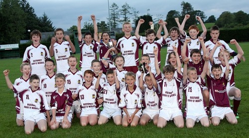
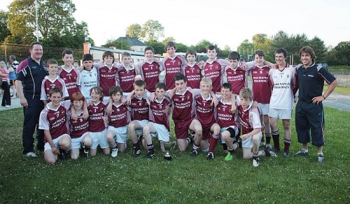
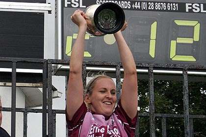

Homepage
GAA in Belturbet
Belturbet Rory O'Moore's was founded in 1888. Rory O'Moore's club at its grounds the dublin road in Belturbet has hosted, county and Ulster finals and even an all ireland semi final and is one of the fines GAA pitches in county Cavan. Since its foundation in 1888, the Rory O' Moores gaelic football club has played a central role in the Rural town of Belturbet.For many people in this lakeland community, Rory O’ Moore’s has represented a life-long passion and way of life.

Winners of:
Junior Championship 1937 and 1995
Intermediate Championship 1996
Senior championship "Annagh" 1973

Main officers:
Chairman: Mark Lawlor
Secretary: Paul Reilly
Treasurer: Alan Traynor

Competing Teams:
Seniors Reserves
U21
Minor U16 , U14 , U12 , U10
Ladies: U14 , U16

All Ireland Scor Winners:
Solo Singing-Jean Galligan also Ceilie Dancing
Clubman Liam McCabe - Current Cavan County Secretary
Facilities: Full sized pitch, Training Pitch, Gymnasium and Club rooms.
